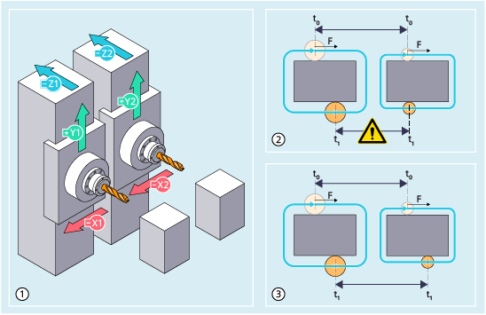

| Note |
|
The function is an option that requires a license (name: "Path-referred channel synchronization"; Article No.: 6FC5800-0BS66-0YB0) for SINUMERIK ONE NCU 1760 control variant, which must be assigned to the hardware via license management. |
Function "Path-referred channel synchronization" allows two channels or a channel group to be synchronized when executing an identical part program, as shown in the following diagram using a double-spindle milling machine as example:
① | Identical machining operations in two channels of a double-spindle milling machine |
② | Tool center point paths when path-referred channel synchronization is inactive Differences in the channels (work offsets, tool wear, compensations) result in differing tool center point paths and without synchronization, the channels behave asynchronously. There is a risk of collisions, as tolerance clearances between the channels cannot be maintained. |
③ | Tool center point paths when path-referred channel synchronization is active As a result of the synchronization, the faster channel is slowed down so that the channels remain in synchronism with one another within a specific tolerance. |
| Notice |
Risk of collisionAs the function itself does not check whether mechanical tolerance clearances between the channels are maintained, when used without additional protective measures (monitoring protection areas) there is always a risk of collision. Remedy: Always use the function in conjunction with internal collision avoidance and/or compile cycle "Axis pair collision protection (Protect MyMachine /CC Axis Monitor)". More information:
|
Activation and deactivation are realized in the part program using predefined SYNCMOTON and SYNCMOTOF procedures. Activation and deactivation must be programmed in all of the channels involved.
The following preconditions must be observed:
Machining conditions must be identical in the channels to be synchronized:
Dynamic response and controller settings of the axes
Behavior of synchronized actions
Effect of NC/PLC interface signals
Responses to faults and alarms
Single block, override, NC start/stop and configured stop must act in synchronism.
In the channels, it is only permissible that identical tools are activated for machining.
Milling cutters or drills are permissible, where the maximum deviation (due to tool wear) from the tool radius is 10 % and 0.5 mm in absolute terms.
A similar tool center point path must be obtained in all channels (in spite of differences in tool wear, in work offsets and in the compensations), which for synchronous operation can move with respect to one another within the mechanical tolerance.
The part program may only be activated and executed using the following G commands:
G0, G1, G2, G3, TRANS, ROT, ATRANS, AROT, FIFOCTRL, G17, G40, G41, G42, G500, G54 … G598, G64, G710, G90, G94, CFIN, NORM, G450, SOFT, CUT2DF, CDOF, FFWON, RMI, WALIMOF, DIAMOF, COMPOF, FTOCOF, OSOF, FNORM, CUTCONOF, TCOABS, G140, G340, G290, G462, CP, PAROT, TOROTOF, RTLION, TOWSTD, FENDNORM, DYNNORM, WALCS0, ORISOF
It is only permissible to use the function in the AUTOMATIC mode.
| SYNCMOTON(<ChanGroup>) | |
| ... | |
| SYNCMOTOF |
| Activate path-referred channel synchronization | ||||||||||
Effective: | Modal | ||||||||||
Note: | |||||||||||
| This parameter is used to specify the group of channels to be synchronized. | ||||||||||
Type: | INT | ||||||||||
Value: | Binary coded | ||||||||||
Bit | ... | 7 | 6 | 5 | 4 | 3 | 2 | 1 | 0 | ||
Channel | ... | 8 | 7 | 6 | 5 | 4 | 3 | 2 | 1 | ||
Example: Value 5 (binary code 101) addresses channels 1 and 3. | |||||||||||
| Deactivate path-referred channel synchronization | ||||||||||
Effective: | Modal | ||||||||||
| Program code | Comment |
|---|---|
| N10 DYNNORM G64 SOFT | |
| N20 G94 F5000 | |
| N30 CFIN | |
| N40 SYNCMOTON(3) | ; Activate path-referred channel synchronization for channels 1 and 2 |
| N50 G1 X10 | |
| N60 G1 X20 G41 | |
| N70 G2 X20 Y-20 I0 J-10 | |
| N80 G1 X10 | |
| N90 G1 Y-10 | |
| N100 G2 X20 Y0 I10 J0 | |
| N110 G1 X30 | |
| N120 SYNCMOTOF | ; Deactivate path-referred channel synchronization. |
| N130 M30 |
See also:
Path-referred channel synchronization (SYNCMOTON, SYNCMOTOF) More information